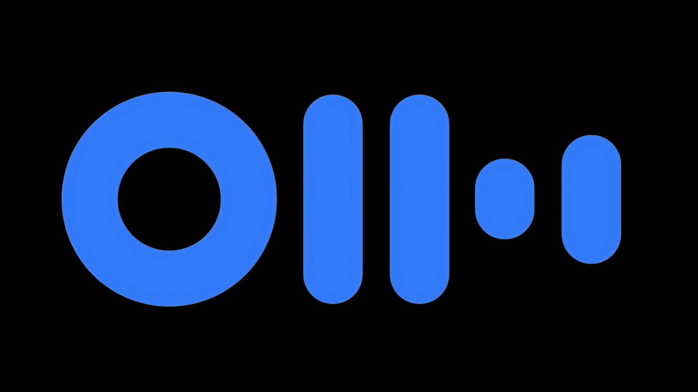

INTELIGENCIA ARTIFICIAL GENERATIVA
Sumérgete en el mundo de la IA Generativa, donde las máquinas crean arte, música y mucho más. ¡Explora cómo esta tecnología está revolucionando la creatividad!
IA Generativa: Transformando la Creatividad Digital
¿Qué es la IA Generativa?
La IA generativa es una rama de la inteligencia artificial que utiliza algoritmos y modelos de aprendizaje profundo para crear contenido nuevo y original. Esto incluye desde imágenes y música hasta texto y código. A diferencia de las técnicas tradicionales de IA que se centran en el análisis y la predicción, la IA generativa se especializa en la creación.
Aplicaciones de la IA Generativa
- Arte y diseño: creación de obras de arte, diseño gráfico, y moda
- Entretenimiento: Generación de música, guines y personajes virtuales.
- Marketing y Publicidad: Producción de contenido personalizado para campañas publicitarias.
- Desarrollo de Software: Generación automática de código y scripts.
- Educación: Creación de materiales educativos y tutoria personalizada.
IA Generativa en Acción
La IA generativa utiliza modelos avanzados para crear automáticamente texto, imágenes, música y videos a partir de descripciones, impulsando la innovación creativa en diversas industrias.
CHAT GPT
Está diseñado para comprender y generar texto de manera coherente y relevante en conversaciones humanas. ChatGPT se utiliza en una amplia variedad de aplicaciones, como por ejemplo, escribir artículos.
MIDJOURNEY
Este modelo puede generar imágenes a partir de descripciones textuales. Puedes describir una escena, un objeto o una combinación de elementos y el modelo creará una imagen correspondiente.
OTTER IA
Es una plataforma de inteligencia artificial especializada en transcripción de voz a texto y generación de resúmenes. Utiliza modelos de reconocimiento de voz para convertir conversaciones y discursos en texto escrito.
Contacto
Déjanos tu mensaje para que nos pongamos en contacto contigo.